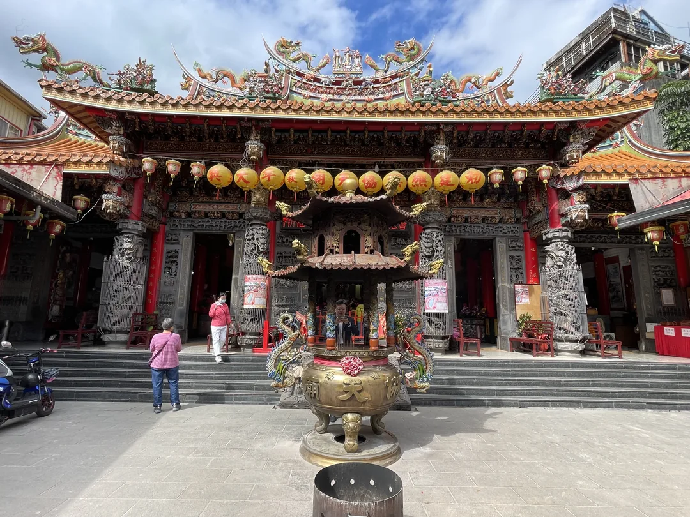
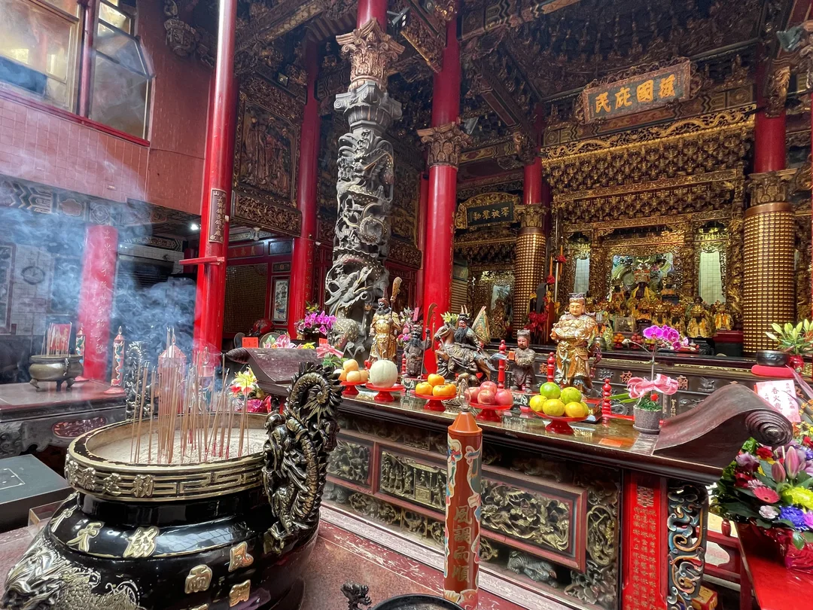

民间信仰中的关帝
史书、小说和戏曲里的关羽形象影响了后世的信仰。历代朝廷陆续加封，民间也逐渐以关公、关帝、关圣帝君等称号供奉他。
从庙里的关帝神像，到走上街头的绕境队伍，关公信仰也体现在地方礼俗和日常生活里。
史书、小说和戏曲里的关羽形象影响了后世的信仰。历代朝廷陆续加封，民间也逐渐以关公、关帝、关圣帝君等称号供奉他。
关羽在民间被尊为关圣帝君，儒、释、道传统也各有尊奉关公的方式。在庙殿里，有时还能见到关平、周仓的神像，随侍在关帝两旁。
绕境是迎请神明出巡的仪式。地方上的队伍可能有乐队、舞狮或其他阵头。各地做法有自己的传统，例如大溪普济堂的关圣帝君诞辰庆典，将庙内礼仪和迎神绕境结合起来。
吴素美老师的资料记录了宜兰不同地点的庙宇与活动。可以先看本站选图，再从原始相册了解拍摄现场。
吴素美老师提供的视频，附简体中文字幕。

